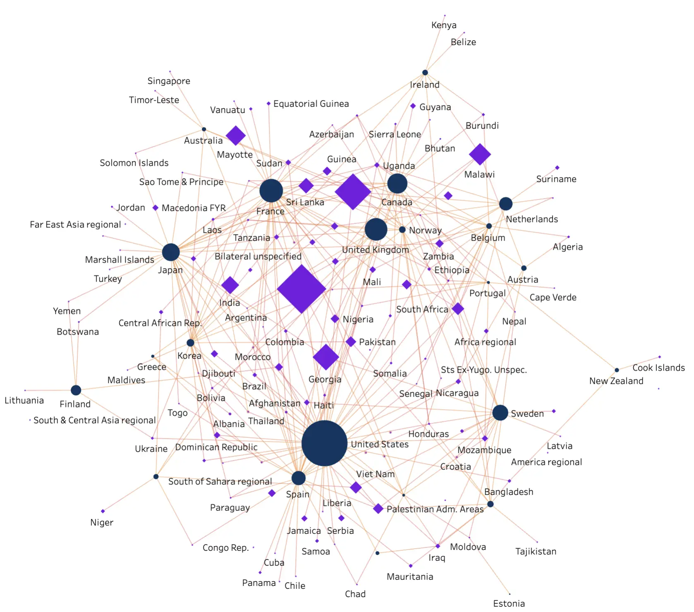
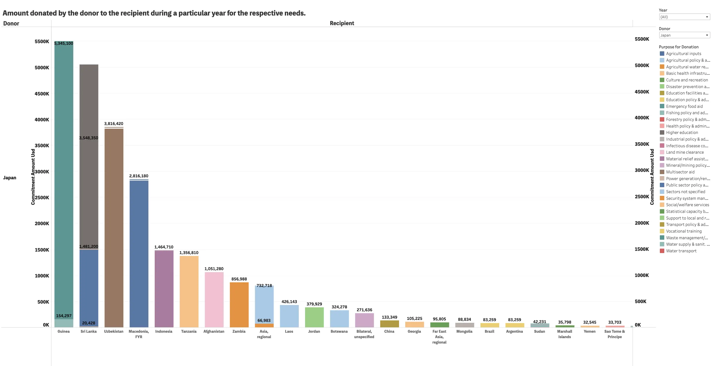

Abstract
This topic gives detailed information about the Financial Aid Data Transactions between donors and recipients all over the world between 1991 to 2010. This data covers the information about the number of donors, recipients, and amount donated in dollars and also it gives the purpose for which the amount was donated. It mainly focuses on how much amount has been donated by each country and the amount donated for what purpose to which country during a particular period or over all the years. This methodology involves data cleaning, data collection to enhance reliability, and data visualization which will help in understanding the structure of data, interpreting and communicating the highlights of data. The main aim of this project is to show the understanding of International Aid data distribution showing trends and correlations that will be helpful for the government or any funding agencies to understand the needs of each country, and to which of the following countries the funds need to be provided.

Network graph visualization
To know no of donations done by each donor over all the years
Click Here

Bar graph visualization
To know amount donated by a donor to a recipient in a particular year or over all the years for the respective needs.
Click Here
.png)
Pie Chart visualization
To know no of donations done by each donor in a particular year and over all the years
Click Here
Introduction
Aid Data[6] is an important policy tool for supporting economically developing countries. Between 1991 to 2010 most of the countries have donated lots of amounts based on different purposes for many developing countries(Recipients). This shows the data about the financial aid distribution globally. This dataset is rich in both categorical and quantitative data which gives us a unique opportunity to understand the complex details of global economic policies and the aid data[6] . This project aims to make use of the data for showing the interactive visualizations by focussing on the years between 1991 to 2010. By creating interactive visualizations the team not only aims to clarify the distribution and impact of global financial aid but also seeks to inform policy negotiations and decision-making processes. This whole endeavor is supported by various tools, but we are choosing tableau and python which enables us to present complex data in an accessible manner. The visualizations we are using are highly interactive which allows users to explore the data in depth. These enhance the user experience significantly when compared to online static charts. For this Project we are planning to show two to three visualizations: Network Graph, Stacked Bar Chart, Sunburst Chart where each visualization shows the different information about the Aid Data[6] . In Summary “Distribution of Global Financial Aid over the years” is a good project which leverages data visualization to visualize the complex data to the field of global data analysis, Local audience etc.,
Implementation
Data transformation:
The gathered data set is in tabular form which has items and attributes but as I have planned to visualize the following data in a Network graph I need to have a network data type that has items(nodes), links, and attributes. To create those nodes I have created some calculated fields like one calculated field which has donors, amount donated, and type= “donor” and another one which has recipients, amount received, and type=“recipient. By combining those two calculated fields we can get our nodes. The edges or links are formed by using this calculated field which combining
source=“donor” and target=“recipient “.
Data cleaning:
In the tableau, we are using the option Data interpreter to clean the data just by selecting it for the network graph and bar graph. As for the Pie chart we have used Python[14] , and pandas[15] to clean the data. After importing the data we found some irregularities in the column names and the data type of each attribute present. By using the methods of Python[14] and pandas [15] we were able to clean the data and assign them the respective data types.
Visualization Tools and Programming languages used:
The visualization tools we used are Tableau[11] and the Programming language is Python[14] . For the Network graph and Stacked bar chart, we used Tableau. For the Sunburst chart, we have written our program in Python language. We used a Jupyter Notebook[17] to write our code in Python[14] . We used Python[14] libraries like plotly[10], and matplotlib[18] in our code. Plotly. express is for creating an interactive sunburst chart based on the year and color that we selected in the dropdown menus. Software Architecture: We used Jupyter Notebook to create a Sunburst Chart and inside it, we used a pip installer to install the required libraries. Also, we used Tableau to create a Network Graph and Stacked Bar Chart. We stored our data dataset locally in Excel file format for retrieving the data. To retain all the generated intermittent files we used pandas[15] in Python[14] , by this the data transformation has been done.
The following front-end technologies used to design the website are HTML[21], CSS[22] bootstrap[7] , javascript[19] , and jquery[20] .
By mounting all the files into the GitHub public we were able to host the following website.
Project Data:
The aid data set [6] is a collection of information regarding financial transactions or assistance, projects, and activities that are taken forward by different donors and recipients. When looking at the raw data we can see all the transactions done from the donor to recipient in the respective year and for which reason it is done. To understand the purpose of the donation we have coalesced_purpose_code which uniquely identifies the coalesced_purpose_name which states the reason for the donation. After having a look at the raw data, we can see that the data set type is a table that contains items and attributes. Another perspective that may provide some insight might be to consider the data as a network of nodes. The nodes are formed by combining (donors, amount donated), (recipient, amount donated), and the edges are formed by combining(source=” donors” and target = “recipients”) As there is a link among years, donor, recipient, amount donated, unique colesced_purpose_code, and colesced_purpose_name which states in this particular year the respective donor has donated to this recipient clearly stating the purpose of the donation by making use of colesced_purpose_code and colesced_purpose_name. Here are the following attributes present in the data set.
- Aiddata_id: It uniquely defines each record of data which is inserted to track back the data when needed. (categorical)
- Year: It provides us with which year the following transaction is done. (quantitative).
- Donor: It tells us about the following country that has provided the donation. (categorical)
- Recipient: It tells us about the following country which has received the donation. (categorical)
- Commitment_amount_usd_constant: It provides us with information about how much donation has been provided from the donor to the recipient. (quantitative)
- Colesced_purpose_code: It is a unique code that is used to identify the unique purpose(coalesced_purpose_name) for the donation. (categorical)
- Colesced_purpose_name: Here we find the unique purpose for the donation or aid provided from donor to recipient. (categorical)